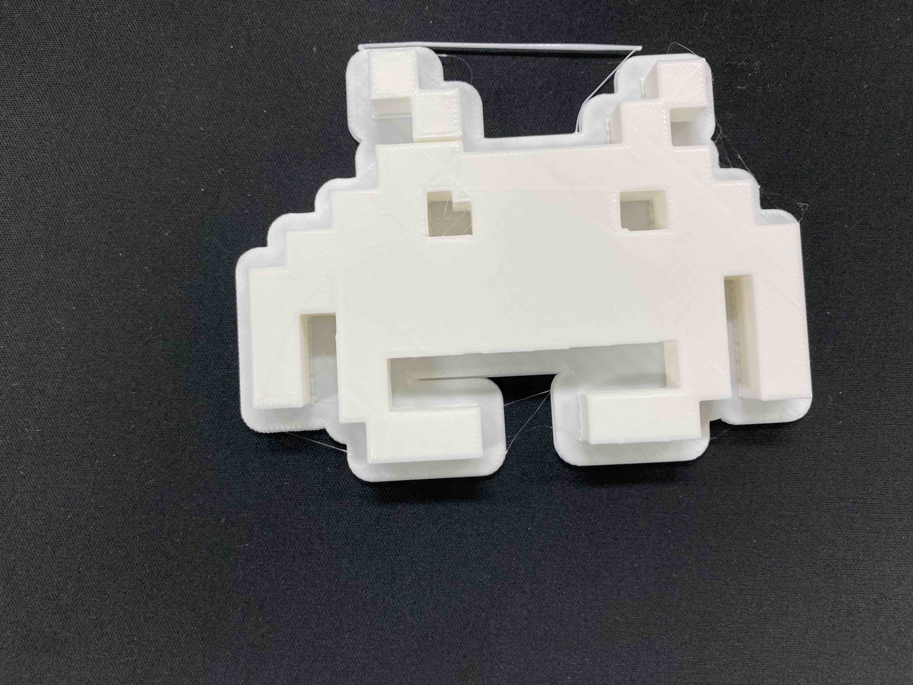

これくらいデバイス




- M5stickC Plus
- Processing
- 3Dプリンター
- 赤外線距離センサー
- ジャイロセンサー
「これくらい」という尺度でコンピュータへの入力ができるデバイス。
現在，人々は単位を使うことで物の大きさや容量などを正確に表現することができる。しかし，数そのものが持つ身体性が薄れてしまったと考えた。 「”数”は触覚の拡張であり，身体的な起源を持つ」というマクルーハンの言葉から，単位によって離れてしまった数の身体性をもう一度近づける作品。
デバイスを使った活用例としてモデリング手法「これくらいモデラ」により３次元もデリングも可能となっている。 （学部卒業研究）
現在，人々は単位を使うことで物の大きさや容量などを正確に表現することができる。しかし，数そのものが持つ身体性が薄れてしまったと考えた。 「”数”は触覚の拡張であり，身体的な起源を持つ」というマクルーハンの言葉から，単位によって離れてしまった数の身体性をもう一度近づける作品。
デバイスを使った活用例としてモデリング手法「これくらいモデラ」により３次元もデリングも可能となっている。 （学部卒業研究）